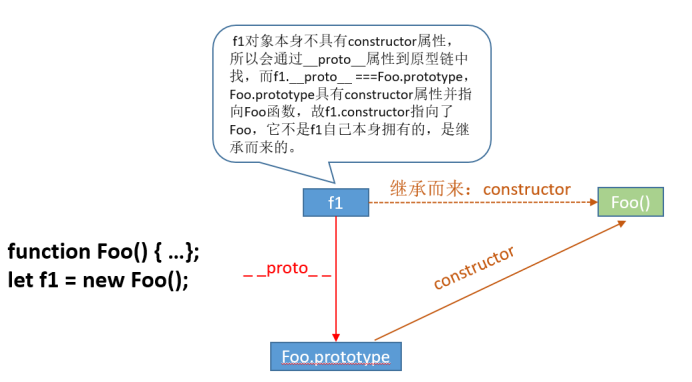
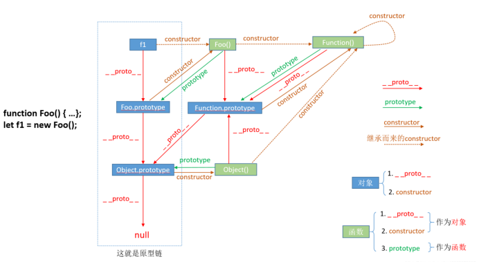

日常的学习笔记，包括 ES6、Promise、Node.js、Webpack、http 原理、Vue全家桶，后续可能还会继续更新 Typescript、Vue3 和 常见的面试题 等等。
构造函数
用 new 关键字来调用的函数，称为 构造函数。
构造函数中一般有两个属性，一个是 原型上的属性，一个是 实例上的属性。
1 | function Animal(name) { |
实例的属性指向不同的存储空间（堆内存），所以输出结果是 false，也就是实例本身的属性。
通过定义原型上的属性，可以使实例拥有 原型上的属性
1 | Animal.prototype.address = {location:'家里'} |
原型与原型链
首先我们要清楚 类（构造函数） 、原型 和 constructor 之间的关系。
- 每一个类（函数）都具有
prototype，并且属性值是一个Object - 对象上天生具有一个属性
constructor，指向类本身 - 每一个对象（普通对象 、 prototype 、实例 、函数 等 ）都具备
__proto__
1 | function Foo() {...}; |
__proto__：当访问一个对象的属性时，如果该对象内部不存在这个属性，那么就会去它的__proto__ 属性所指向的那个对象（可以理解为父对象）里找，如果父对象也不存在这个属性，则继续往父对象的__proto__属性所指向的那个对象（可以理解为爷爷对象）里找，如果还没找到，则继续往上找…直到原型链顶端null，真正的空值。
prototype：包含可以由特定类型的所有实例共享的属性和方法，也就是让该函数所实例化的对象们都可以找到公用的属性和方法。任何函数在创建的时候，其实会默认同时创建该函数的 prototype 对象。
constructor：指向该对象的构造函数，每个对象都有构造函数。若对象本身不具备constructor属性，则会通过__proto__向原型链进行查找，找到原型链中constructor后，确定其指向，并进行继承。

关于 原型链查找机制，我个人是这么理解的。
首先实例的__proto__会始终指向其构造函数的prototype属性（f.__proto__ === Fn.prototype），构造函数和其所有父类（Fn、Function、Object）均指向Function.prototype，Fn.prototype.__proto__指向的是Object.prototype，而Function.prototype.__proto__指向Object.prototype。Object.prototype.__proto__指向null，就是此原型链的终点。

关于原型链，可以将上图好好理解一下，这张图更直观的表述了prototype、__proto__ 和 constructor 之间的关系。没事的时候也可以将他们画一下。
类的继承
构造函数 其实 就是类 的一种。
1 | function Animal(name) { |
在这里我们模拟一个 父类 Animal 和一个子类 Tiger
继承父类实例上的属性
我们只需要子类上加一个
.call改变一下 this 的指向即可1
2
3
4
5
6
7function Tiger(name) {
this.name = name;
this.age = 10;
Animal.call(this); //将父类的this指向子类，使子类继承父类中的属性。
}
let tiger = new Tiger();
console.log(tiger.eat); // 吃肉继承父类原型上的方法
上述做法我们只继承了父类实例上的属性，并没有继承其原型上的属性。
1
console.log(tiger.address); // undefined
这里我们有这么几种解决方案
父类.prototype.__proto__ = 子类.prototype我们的子类和父类的
prototype分别指向不同的方法和对象。所以我们为了使子类的原型继承父类原型上的方法，可以让子类的prototype.__proto__指向父类的prototype。1
2Tiger.prototype.__proto__ = Animal.prototype;
console.log(tiger.address); // {location: '山里'}这样我们就实现了其中一种继承方法。
Object.createObject.create()方法创建一个新对象，使用现有的对象来提供新创建的对象的__proto__。1
2Tiger.prototype = Object.create(Animal.prototype);
console.log(tiger.address); // {location: '山里'}Object.setPrototypeOf使用
Object.setPrototypeOf()方法设置一个指定的对象的原型 ( 即, 内部[[Prototype]]属性）到另一个对象或null。1
Object.setPrototypeOf(Tiger.prototype, Animal.prototype);
（注：以上方法需要在子类的原型方法绑定前添加。）
这种方法我们无法向父类传参，只能给子类传参。
ES6中的类（class）
首先，ES6与ES5类的实现思路相同，同样是利用 原型链 来进行实现的。
1 | class Animal { |
上面就是最简单的一种类的实现方式。
但是 ES6的类 和ES5有几点不同
类不可以被当做函数调用。
1
Animal() // Class constructor Animal cannot be invoked without 'new'
ES6的类需要使用new作为关键字来进行实例化
同理，如果我们调用原型上的方法，可以将类实例化出来后，直接进行调用。
1
2let a = new Animal();
a.__proto__.say(); // say（注：ES6规范中，若单独调用原型上的方法，this是不存在的）
比如我们直接将原型上的方法实例化出来
1
2
3
4
5
6
7// 暂时修改一下Animal类上的say()方法，测试完后再将此方法改回
say() {
console.log(this);
};
let say = a.__proto__.say;
say(); // undefined返回的结果就是
undefined包含静态方法（ES7中的静态属性）
ES6中允许类存在 私有方法（ES7中的私有属性）
1
2
3
4
5
6
7
8
9class Animal {
// ES6
static flag() {
return 'test';
}
// ES7
static flag = 'test'
}
console.log(Animal.flag()) // test（注：在ES6的环境中，不能使用ES7的写法）
调用时，需要直接用类来进行调用，实例不能进行调用。
使用
extends关键字实现继承extends可以直接实现继承。1
2
3
4
5class Tiger extends Animal {}
let t = new Tiger('老虎')
t.say(); // say
console.log(t.eat); // 吃肉
console.log(t.name); // 老虎首先，父类的方法与原型 直接继承给了子类。
随后，传递的值 老虎 ，被直接传递给了父类的
constructor，直接输出了结果。1
2
3class Tiger extends Animal {
constructor(){ } // 报错
}这里我们还有一个需要注意的，父类存在自己的
constructor，子类不能再定义constructor如果想要实现此功能，需要使用关键字
super。1
2
3
4
5class Tiger extends Animal {
constructor(name){ // Animal.call(this, name)
super(name)
}
}（提示：我们可以去 babel 上查看ES6中class的实现方式，加深对class的理解）
本篇文章由莫小尚创作，文章中如有任何问题和纰漏，欢迎您的指正与交流。
您也可以关注我的 个人站点、博客园 和 掘金，我会在文章产出后同步上传到这些平台上。
最后感谢您的支持！